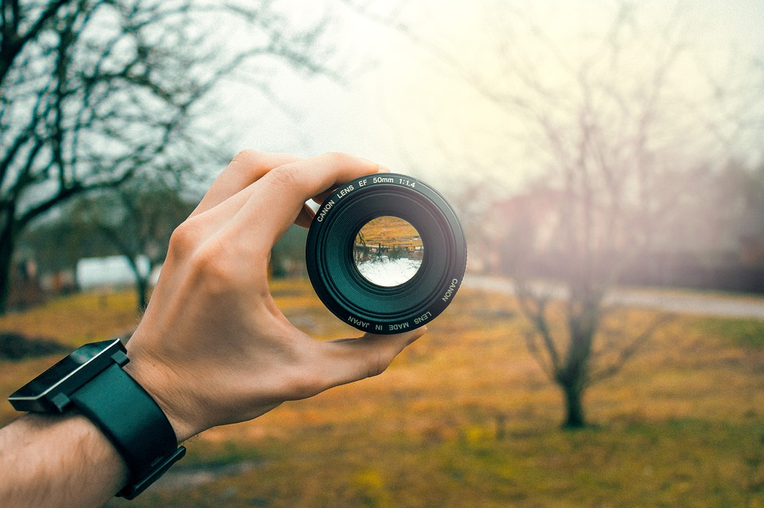

Bienvenido al Mundo de la Fotografía Digital
La fotografía digital ha revolucionado la manera en que capturamos y compartimos momentos. En esta página encontrarás información valiosa sobre técnicas, equipos y consejos para mejorar tus habilidades fotográficas.
Técnicas Fundamentales
Composición Fotográfica
Una buena composición es la base de una fotografía exitosa. Aquí te presentamos las técnicas más importantes que todo fotógrafo debe conocer.
Reglas de Composición:
- Regla de los tercios
- Líneas guía y diagonales
- Simetría y patrones
- Encuadre natural
- Profundidad de campo
Configuraciones Esenciales:
- Apertura: Controla la profundidad de campo
- Velocidad: Congela o muestra movimiento
- ISO: Sensibilidad a la luz
- Balance de blancos: Temperatura de color
Equipos Recomendados
Cámaras DSLR

Las cámaras réflex digitales ofrecen versatilidad y calidad profesional para fotógrafos de todos los niveles.
Lentes
Los objetivos son fundamentales para lograr diferentes efectos y estilos en tus fotografías.
Consejos para Principiantes
Si estás comenzando en la fotografía digital, es hora de que estudies y practiques, adicional a ello, estos consejos te ayudarán a mejorar rápidamente tus resultados:
Practica Diariamente
La práctica constante es clave para desarrollar tu ojo fotográfico, entrenamiento duro siempre por delante.
Estudia la Luz
Aprende a observar cómo la luz cambia durante el día y cómo afecta tus fotos, asi trabajar de mejor manera en proyecto.
Enlaces Útiles
Explora estos recursos adicionales para continuar aprendiendo: